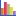
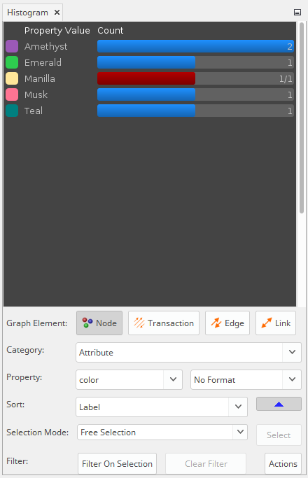
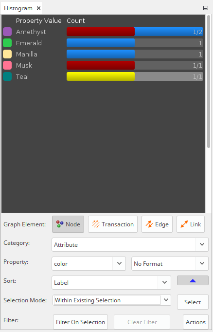
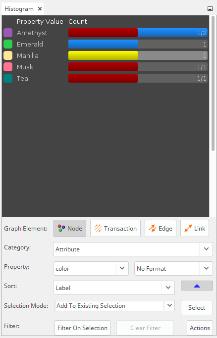
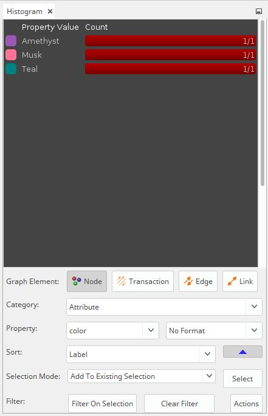

Histogram
Histogram Actions
| Constellation Action |
Keyboard Shortcut |
User Action |
Menu Icon |
|
Open Histogram View
|
Ctrl + Shift + H
|
Views -> Histogram
|

|
Introduction
The Histogram View provides a way to summarise both the structural properties of a graph and the values of attributes,
as well as the capability to filter and make selections based on these properties.

Histogram Panel
The Histogram Panel displays an interactive summary of information on the graph in a visual bar chart. The "Property
Value" column is a list of unique values for a particular property, and the "Count" column displays the number of
graph elements which share that property value.
The bar length indicates the proportion of elements that share that property when compared to the value that is most
prevalent on the graph. It is blue for unselected elements, and red for selected elements. When only a portion of the
elements sharing a property value are selected on the graph, the count value will also change to the ratio of selected
elements / total elements sharing that property value. It will also be coloured both red and blue, with the proportion
of red matching the ratio of selected / unselected.
Left clicking on a row in the Histogram Panel will select all elements on the graph which share that Property Value.
Holding left click and dragging across multiple rows will select multiple rows. Holding the shift key while left
clicking will add the clicked row elements to the selection. Holding the ctrl key while left clicking will toggle the
selection of the clicked row elements.
Right clicking on a row in the Histogram Panel will open up a context menu allowing you to copy selected property
values (and optionally their counts) to the clipboard.
Graph Element Buttons
The Graph Element Buttons will toggle which graph elements the Histogram View will list. Options include Node,
Transaction, Edge, and Link.
NOTE: Edges and Links in Constellation do not have Attributes.
Category Drop Down List
The Category Drop Down List will display categories of properties to display in the Histogram View. Depending on the
Graph Element type, this list will change.
Node Categories
- Attribute -
Properties listed will be the attributes of the node.
- Graph Property -
Properties will include graph properties such as neighbour count and transaction count.
- Sum Transaction Attribute -
Properties will be the list of transaction attributes, and the value will be the sum of the values of these
attributes for all adjacent transactions.
- Average Transaction Attribute -
Properties will be the list of transaction attributes, and the value will be the average of the values of these
attributes for all adjacent transactions.
- Maximum Transaction Attribute -
Properties will be the list of transaction attributes, and the value will be the maximum of the values of these
attributes for all adjacent transactions.
- Minimum Transaction Attribute -
Properties will be the list of transaction attributes, and the value will be the minimum of the values of these
attributes for all adjacent transactions.
- Unique Values Transaction Attribute -
Properties will be the list of transaction attributes, and the value will be the list of unique values for these
attributes for all adjacent transactions.
- Sum Neighbour Attribute -
Properties will be the list of node attributes, and the value will be the sum of the values of these attributes
for all neighbouring nodes.
- Average Neighbour Attribute -
Properties will be the list of node attributes, and the value will be the average of the values of these attributes
for all neighbouring nodes.
- Maximum Neighbour Attribute -
Properties will be the list of node attributes, and the value will be the maximum of the values of these attributes
for all neighbouring nodes.
- Minimum Neighbour Attribute -
Properties will be the list of node attributes, and the value will be the minimum of the values of these attributes
for all neighbouring nodes.
- Unique Values Neighbour Attribute -
Properties will be the list of node attributes, and the value will be the list of unique values for these attributes
for all neighbouring nodes.
Transaction Categories
- Attribute -
Properties listed will be the attributes of the transaction.
- Graph Property -
Properties will include transaction properties such as transaction direction.
- Source Node Attribute -
Properties will be the list of node attributes, and the value will be value of these attributes for the source node
of the transaction.
- Destination Node Attribute -
Properties will be the list of node attributes, and the value will be value of these attributes for the destination
node of the transaction.
Edge Categories
- Attribute -
Properties listed will be the attributes of the edge.
- Graph Property -
Properties will include transaction properties such as transaction count.
- Source Node Attribute -
Properties will be the list of node attributes, and the value will be value of these attributes for the source node
of the edge.
- Destination Node Attribute -
Properties will be the list of node attributes, and the value will be value of these attributes for the destination
node of the edge.
- Sum Transaction Attribute -
Properties will be the list of transaction attributes, and the value will be the sum of the values of these
attributes for all transactions contained within the edge.
- Average Transaction Attribute -
Properties will be the list of transaction attributes, and the value will be the average of the values of these
attributes for all transactions contained within the edge.
- Maximum Transaction Attribute -
Properties will be the list of transaction attributes, and the value will be the maximum of the values of these
attributes for all transactions contained within the edge.
- Minimum Transaction Attribute -
Properties will be the list of transaction attributes, and the value will be the minimum of the values of these
attributes for all transactions contained within the edge.
- Unique Values Transaction Attribute -
Properties will be the list of transaction attributes, and the value will be the list of unique values for these
attributes for all transactions contained within the edge.
Link Categories
- Attribute -
Properties listed will be the attributes of the link.
- Graph Property -
Properties will include transaction properties such as transaction count.
- Source Node Attribute -
Properties will be the list of node attributes, and the value will be value of these attributes for the source node
of the link (source has lower graph ID).
- Destination Node Attribute -
Properties will be the list of node attributes, and the value will be value of these attributes for the destination
node of the link (destination has higher graph ID).
- Sum Transaction Attribute -
Properties will be the list of transaction attributes, and the value will be the sum of the values of these
attributes for all transactions contained within the link.
- Average Transaction Attribute -
Properties will be the list of transaction attributes, and the value will be the average of the values of these
attributes for all transactions contained within the link.
- Maximum Transaction Attribute -
Properties will be the list of transaction attributes, and the value will be the maximum of the values of these
attributes for all transactions contained within the link.
- Minimum Transaction Attribute -
Properties will be the list of transaction attributes, and the value will be the minimum of the values of these
attributes for all transactions contained within the link.
- Unique Values Transaction Attribute -
Properties will be the list of transaction attributes, and the value will be the list of unique values for these
attributes for all transactions contained within the link.
Property Drop Down List
The Property Drop Down List will display properties to histogram. The properties listed will change depending on the
Graph Element and Category selected - see above.
The Format Drop Down List will provide different ways of grouping values for properties, depending on the type.
- String -
Allows for grouping by substring, case (upper or lower) and find (which accepts regular expressions).
- Numeric -
Allows for binning into buckets of values.
- DateTime -
Allows for grouping by various DateTime formats - Hour of Day, Day of Week, Month of Year, Date, Year, and so on.
- Schema Type -
Allows for grouping by Top-Level Schema Types
Sort Drop Down List
The Sort Drop Down List will display options for sorting the rows of the Histogram.
The Arrow Button will toggle Ascending/Descending values.
- Label -
Will sort the rows of the Histogram alphabetically by Property Value label.
- Total Count -
Will sort the rows of the Histogram in order of Count values.
- Selected Count -
Will sort the rows of the Histogram in order of the number of elements sharing a Property Value that are selected.
- Selected Proportion -
Will sort the rows of the Histogram in order of the proportion of elements sharing a Property Value that are
selected.
Selection Mode Drop Down List
The Selection Mode will toggle the interactivity of the Histogram View.
- Free Selection -
The default setting. Clicking rows which change the selection on the graph. Left clicking on a row in the Histogram
Panel will select all elements on the graph which share that Property Value. Holding left click and dragging across
multiple rows will select multiple rows. Holding the shift key while left clicking will add the clicked row elements
to the selection. Holding the ctrl key while left clicking will toggle the selection of the clicked row elements.
- Within Existing Selection -
Clicking rows will not change the selection on the graph until the adjacent "Select" button is pressed. This mode
will allow for filtering on the existing graph selection. Clicking on a row with selected (red) elements will change
their colour to yellow. Pressing the adjacent "Select" button will change the selection on the graph to all yellow
elements. Holding the shift key while left clicking will change red elements of rows to yellow. Holding the ctrl
key while left clicking will toggle elements of rows between red and yellow.

- Add To Existing Selection -
Clicking rows will not change the selection on the graph until the adjacent "Select" button is pressed. This mode
will allow for adding rows to the existing graph selection. Clicking on a row with unselected (blue) elements will
change their colour to yellow. Pressing the adjacent Select button will change the selection on
the graph to all yellow elements. Holding the shift key while left clicking will change blue elements of rows to
yellow. Holding the ctrl key while left clicking will toggle elements of rows between blue and yellow.

Filter

The Filter on Selection button will hide unselected elements from the Histogram View, until such time as the Clear
Filter Button is pressed. The Clear Filter Button will activate only when a Histogram filter is in place, and as such
is useful to check when elements are missing from the Histogram View.
Actions
Pressing the Actions button will reveal two options: Save Bins To Graph and Save Bins To Clipboard
- Save Bins to Graph -
Will add a histogram_bin attribute to the graph, and the value of which corresponding to the Property Value of the
node or transaction.
- Save Bins to Clipboard -
Will copy the Property Values and Counts displayed in the Histogram View to the clipboard, which can be pasted into
a text editor in a tab delimited format.